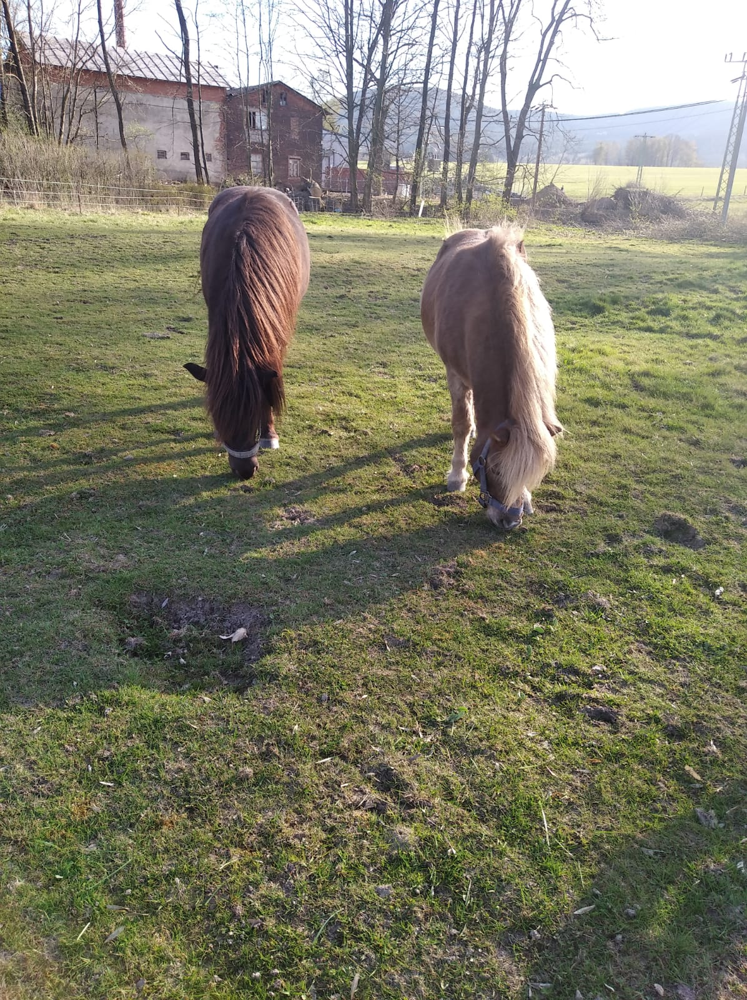

Těchto závodů se účastnila: V první soutěži, křížky do 50 cm, Majda s
lordem. V druhé soutěži, do 60 cm, lord s Majdou, Rocky se Šadlotkou a Zorro s Klárkou.
Ve třetí soutěži, do 70cm, jela opět Klárka se Zorrem a Šarlotka s
Rockym, přidalal se k nim ještě Kristý s Biankou. Kristý se umístila na 1. místě a Šarlotka na
5. místě.
V soutěžích do 80cm jela Kristýna s Biancou, Ája s Montym a Natálka se
Silver. Kristý s Biankou se umístili na prvním místě
V soutěžích do 90cm jela Ája s Montym
Sobotka
Dne 3.7 jsme se zúčastnili Závodů v Sobotce
Těchto závodů se účastnila: V první soutěži, křížky do 50 cm, Majda s
lordem. V druhé soutěži, do 60 cm, lord s Majdou, Rocky s Klárkou a Zorro s Tínkou. Z této
soutěže si Klárka odnesla 1. místo a Tínka se umístila na 7. místě.
Ve třetí soutěži, do 70cm, jela opět Tínka se Zorrem a Klárka s
Rockym. Tínka se umístila na krásném 5. místě
V soutěžích do 80cm a 90cm jela Kristýna s Biancou. Z obou soutěží si
odvezly 3. místo
Sobotka
Dne 3.7 jsme se zúčastnili závodů v Sobotce
Těchto závodů se účastnila: V první soutěži, křížky do 50 cm, Majda s
lordem. V druhé soutěži, do 60 cm, lord s Majdou, Rocky s Klárkou a Zorro s Tínkou. Z této
soutěže si Klárka odnesla 1. místo a Tínka se umístila na 7. místě.
Ve třetí soutěži, do 70cm, jela opět Tínka se Zorrem a Klárka s
Rockym. Tínka se umístila na krásném 5. místě
V soutěžích do 80cm a 90cm jela Kristýna s Biancou. Z obou soutěží si
odvezly 3. místo
Pohár Českého ráje
V sobotu 21.5. jsme se zúčastnili prvního kola Poháru Českého ráje.
Tyto závody jsme jeli v sestavě: Majda, Jana a Kipp, Klárka a Lord,
Šarlotka a Rocky, Natálka a Silver, Barča a Bianka a Tínka s Devronem.

Offika Nymburk
Jela Barča s Biankou a Tínka s Devronem. Obě dvojce startovali v
soutěžích
ZM a Z. Barča s Biankou si v soutěži ZM na limitovaný čas dojely pro 4.místo. Tínka s Devronem
si v
soutěži Z na čas dojeli pro krásné 1.místo.
Tyto závody byly velmi vydařené a holky byly se svými výkony
spokojeny.
Hnanice
V neděli 24.4. jsme se zúčastnili hobby závodů v Hnanicích.
Jela Majda s Kippem, Šarlotka s Rockym, Jana s Lordem, Tínka se
Zorrem,
Natálka se Silver, Kristý s Biankou a Hanka s Betty.
Sobotka
16.4. jsme v Sobotce úspěšně zahájili Sezonu 2022
Tyto závody jeli i naši nejmladší poníci a velice se jim dařilo. V
soutěži
do 60 cm s návazným rozeskakováním se na 2. místě, umístila Šarlotka s Rockym a na 3. místě se
umístila Klárka s Lordem. V soutěži do 70 cm s návazným rozeskakováním se na 4. místě, umístila
Tínka se Zorrem. Tuto soutěž jela i Natálka se Silver, ale bohužel udělaly chybu na prvním
skoku.
Další soutěž ale zajely čistě a moc hezky.
Tyto závody byly opravdu moc vydařené a my se těšíme na další
návštěvu.